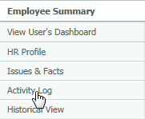
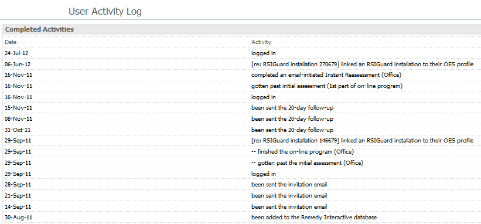
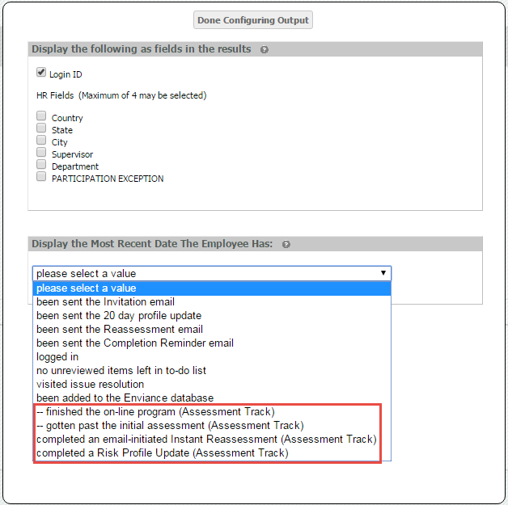

The activity log in the Employee Summary lists all the activity in a user's account. The list is a view-only display of all log points that have been generated for the user.
To view a user's Activity Log:
From the Employee Summary, click the Activity Log link from the menu on the left.

Some of the information you can see in the Activity log includes:
See Appendix A for more information on the log points associated with the activities.

Some explanation of the different log points related to assessments in the Activity Log may be helpful.
-- gotten past initial assessment (*node)
-- finished the on-line program (*node)
The "-- gotten past..." log point is always associated with the "-- finished the on-line program (Assessment)" log point. If the "--gotten past..." log point exists without the "finished…" log point, the user has not yet completed the full Assessment & Training.
gotten past initial assessment (1st part of on-line program)
completed a Risk Profile update (*node) OR completed an email-initiated Instant Reassessment (*node)
The "gotten past..." log point is always associated with the "completed...". logpoint. If the "gotten past..." log point exists without the "completed…" log point, the user has not yet completed the reassessment update.
The "completed an email-initiated Instant Reassessment (node)" log point is created when the user has completed an update through an emailed link (e,g., 20-day update, or one manually sent by an administrator), as opposed to using the dashboard links or the Issue Resolution tab. This log point is no longer being generated for customers using dashboards, although it may still show as a legacy log point for activities that occurred before the customer converted to dashboards.
* The "node" reference depends on the system configuration, which defines the assessments. Typically the text may include parenthetically "(Office)" or "(Self-Assessment)" or "(Assessment)".
The same assessment log points are seen in the Report filters and in My Saved Criteria, where you can use them for filtering users in reports — for example, to see a report of users who have not yet completed a self-assessment.

Note: The "gotten past initial assessment (1st part of on-line program)" is not seen in report filters.